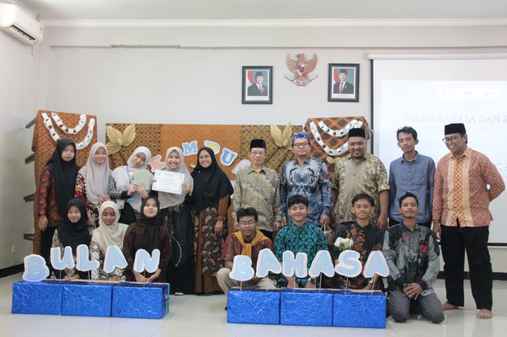
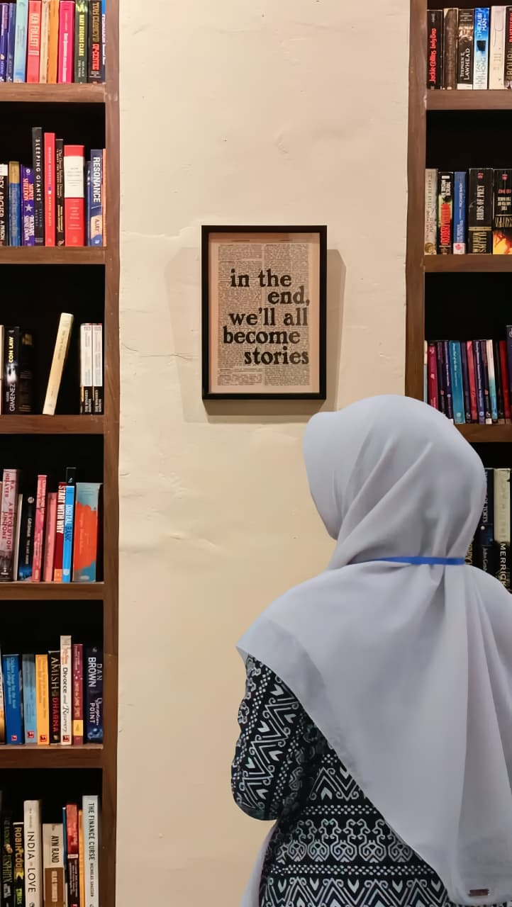
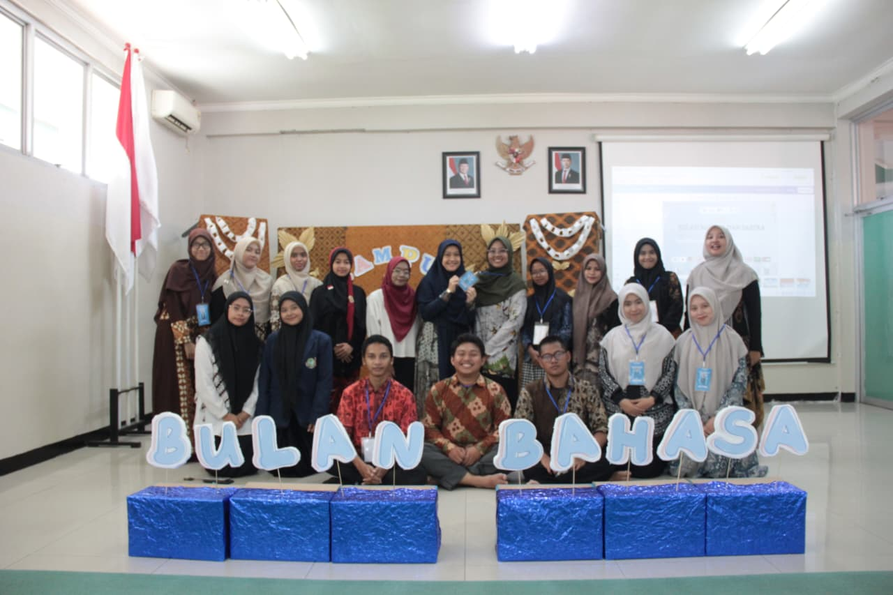
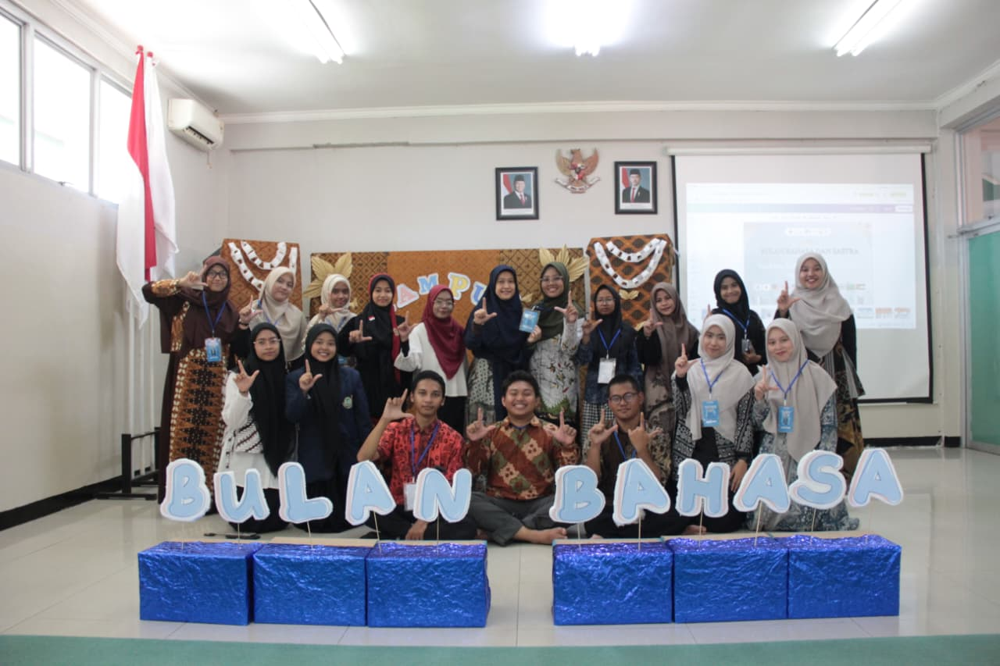
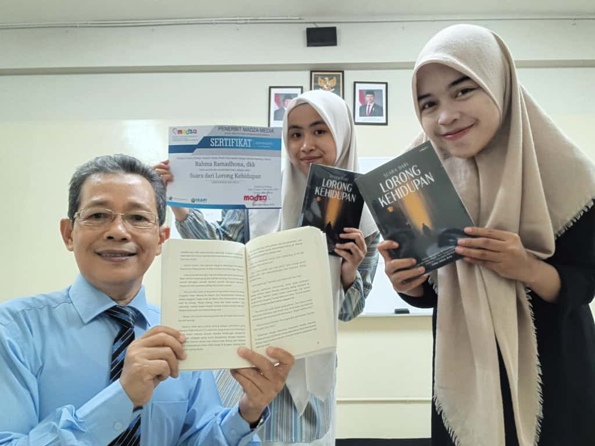

Kepemimpinan Mahasiswa
Aktif sebagai Ketua HIMA Pendidikan Bahasa Indonesia.

Selamat Datang di Ruang Tumbuh
Mahasiswa Pendidikan Bahasa Indonesia
Saya sedang belajar menjadi pendidik yang sabar, kreatif dan mampu membuar pelajaran yang menyenangkan.
Jelajahi ProfilSebagai mahasiswa yang mencintai puisi dan sastra, saya melihat pendidikan bukan sekadar transfer teori, melainkan proses panjang menumbuhkan karakter melalui bahasa.
| Nama | : | Siti Nurul Aulya |
|---|---|---|
| NIM | : | 240142003 |
| Program Studi | : | Pendidikan Bahasa Indonesia |
| Semester | : | 5 |
| Hobi | : | Membaca dan Menulis |

Walaupun saya baru memiliki sedikit pengalaman dalam mengajar, pengalaman saya berinteraksi dan mengajar anak-anak di lingkungan masyarakat menyadarkan saya bahwa literasi dasar adalah kunci. Saya ingin menjadi fasilitator yang tidak hanya mengajarkan cara membaca dan menulis, tetapi juga membantu siswa memahami diri mereka dan dunia melalui karya sastra. Menjadi guru memberi saya kesempatan untuk terus belajar dan menjadi teladan yang baik.
Aktif sebagai Ketua HIMA Pendidikan Bahasa Indonesia.

Berperan sebagai Penanggung Jawab Pengembara dalam acara PERJUSA, mengatur dinamika lapangan dan melatih kedisiplinan kolaboratif. Turut menjadi panitia di Bulan Bahasa.


Menciptakan Cerpen dan kutipan refleksi mengenai pertumbuhan pribadi dan kematangan emosional untuk proyek antologi bersama.

"Menjadi guru yang mampu mewujudkan suasana belajar yang menyenangkan, interaktif, dan kolaboratif antarsiswa."
Terbuka untuk diskusi seputar literasi, media pembelajaran inovatif, dan proyek pendidikan.
Email: sitinurulaulyaxipa.com